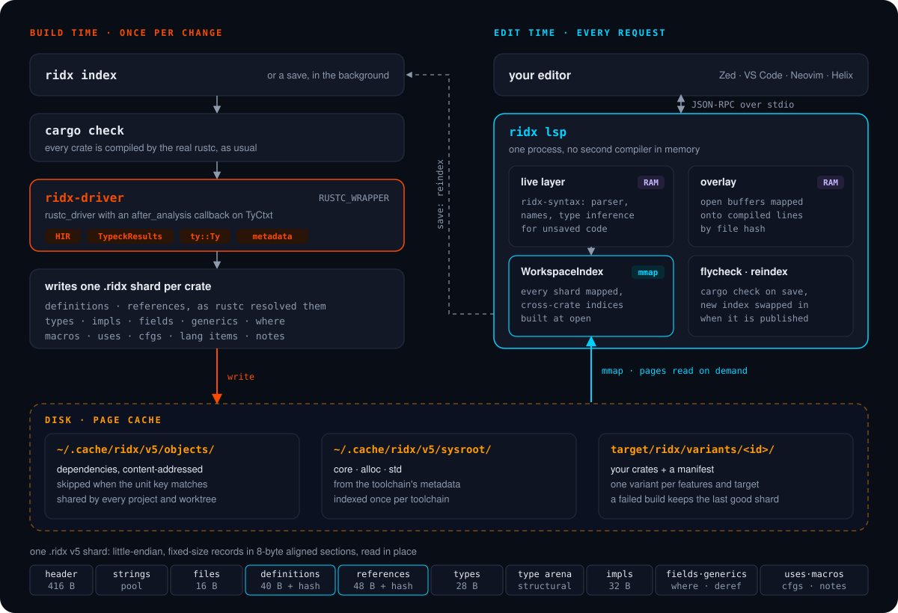

Rust code intelligence at a tenth of the memory.
ridx is a language server for Rust that answers from what rustc already worked out. It records definitions, references and types once during cargo check and reads them straight from disk, so your editor gets navigation, hover and completion without a second compiler in RAM.
# as a language server: Zed, VS Code, Neovim, Helix $ ridx lsp no index yet? it builds one, with progress # or ask from the shell $ ridx def . tokio::runtime::Builder $ ridx refs . src/main.rs:12:15 $ ridx hover . src/main.rs:12:15
The compiler already knows the answers
Same editor session, two servers
Each server opened the same 40 files of a repository and answered the same requests: symbols, highlighting, folding, inlay hints, then hover, definition, type definition, highlights, references and completion at sampled positions, and an edit. Memory includes child processes.
What runs where
Two things live in memory: the language server and your unsaved buffers. Everything else is files on disk, mapped on demand.

The whole design, request by request, with pointers into the code: Documentation → Architecture.
Little-endian, fixed-size records in 8-byte aligned sections. A lookup is a hash probe, a binary search or a scan over mapped memory; records are read in place, never decoded into the heap.
What to know before you switch
One server, every capability your editor asks for
One command, then point your editor at it
Linux (x86_64, arm64) and macOS on Apple Silicon, with rustup. The installer adds Rust 1.98.1, the compiler ridx-driver runs on (your projects keep their own toolchain), checks the release archive's SHA-256 and puts ridx and ridx-driver into ~/.local/bin. Open a Cargo workspace and ridx indexes it on first use; your editor shows the progress.
curl -fsSL https://rust-intelligence.com/install.sh | sh
Prefer to build it? From crates.io: rustup toolchain install 1.98.1 --profile minimal --component rustc-dev,rust-src, then cargo +1.98.1 install ridx and RUSTC_BOOTSTRAP=1 RUSTFLAGS="-C prefer-dynamic" cargo +1.98.1 install ridx-driver (the driver links the compiler's own libraries). If a desktop editor cannot find ridx, give it the full path from which ridx.